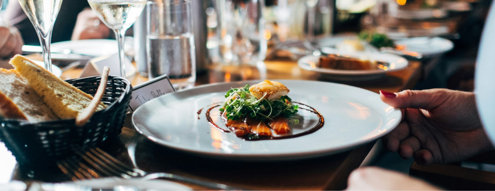
Restorando: Find the Right Restaurant
Argentina · 2018 · Lead Product Designer
The Problem
The challenge was to reduce the bounce rate on restaurant profile screens — where the majority of our traffic landed. Most users were spending less than 3 seconds on the page before leaving, a clear signal that the experience wasn't meeting their needs. But before redesigning anything, we needed to understand why.
Of the four platforms available, we chose to focus on mobile web. It had the highest growth over the past four years and offered more agility than native apps for running experiments and validating changes quickly.
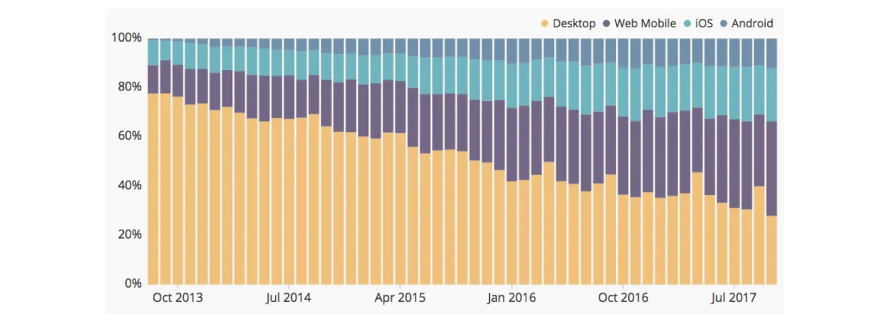
The site had a transactional framing: the first thing users saw on a restaurant profile was "Book for free" and a prominent "See availability" button. We were optimizing for conversion before we'd earned the right to ask for it. We decided to reframe the problem entirely: what is the actual job users are trying to do when they arrive at Restorando?
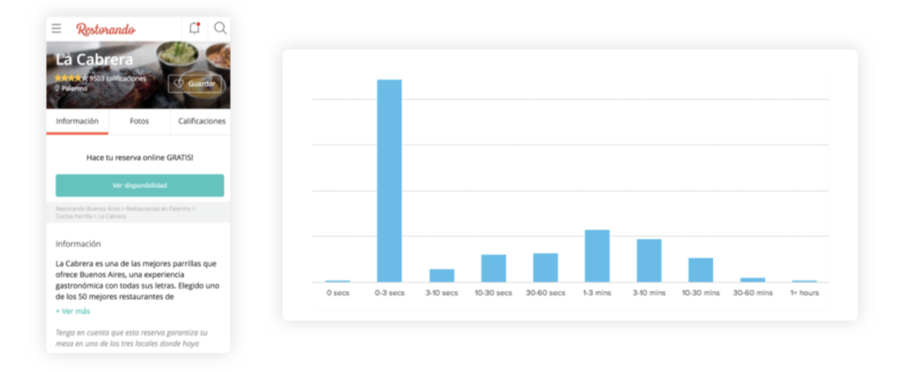
Team
- Lead Designer: Stefania
- Manager: CTO
- Collaborators: One Product Designer (same squad) and the development team for technical feasibility.
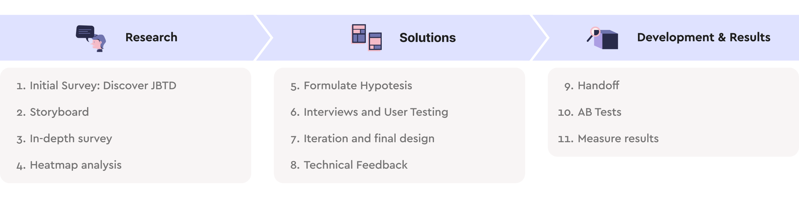
Research: Initial Survey
We surveyed users arriving at restaurant profile pages with a single question: what do you want to do? Options included finding somewhere to eat, booking a table, looking up specific information about a restaurant, or other. For users who said "Book a table," we asked whether they already knew where they wanted to go. For those looking up information, we asked how flexible they were about switching restaurants if their first choice wasn't available.
The results were the core insight that reframed the entire project: almost 60% of users arriving at a restaurant profile hadn't decided where to eat yet. They were evaluating, not booking. A further 20% of those who did know where they wanted to go were open to switching if there was no availability — meaning only a small fraction of our traffic was ready to book on arrival.
In short: nearly two-thirds of users were using Restorando to make a decision, not execute one. Our job on the profile screen wasn't to push a booking — it was to help them decide.
Storyboard
To map the decision-making journey, we created a storyboard tracing the micro-moments a user goes through when evaluating whether a restaurant is right for them — from the initial search context through to committing to a reservation. This helped us identify which information mattered at each stage and where the current profile was failing to provide it.
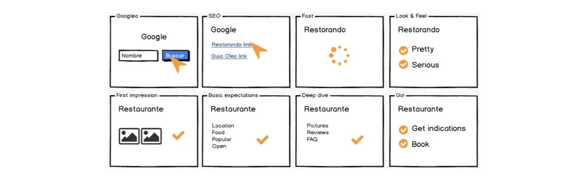
Surveys: What Information Do Users Need?
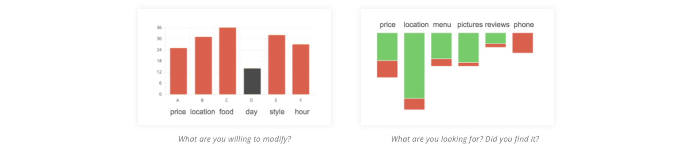
We ran a second round of surveys to understand what information users were actually looking for and whether they could find it on the current profile. Key findings:
- Location was the most searched piece of information — and most users could find it.
- Price was the second most important — and nearly half of users couldn't find it.
- Menu and photos were similarly sought and mostly findable.
- Users wanted a phone number to contact the restaurant directly — we didn't offer that.
- Reviews mattered, but their format on the current profile wasn't serving users well.
- The day of the week was the variable users were least willing to change — meaning availability for their specific day was a decisive factor.
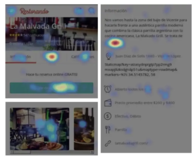
Heatmaps
Heatmaps revealed an important gap between what users said they wanted and what they actually did. Photos were the most-clicked element on the page — but in the surveys, users hadn't ranked photos as a top priority. This is a reliable pattern: self-reported behavior and observed behavior diverge regularly, which is exactly why combining qualitative and quantitative methods matters. Users interact with detail items — price, hours, payment methods, food type — suggesting they wanted more depth than the current layout provided.
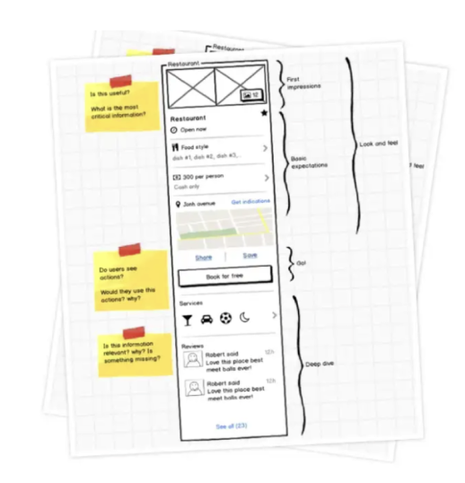
Formulate Hypothesis
With the research consolidated, we built a first low-fidelity prototype that restructured the information hierarchy and architecture of the profile page. We also documented open questions about the design — things we were uncertain about — to test explicitly with users rather than assuming the answers.
Validate with Users
We created multiple versions of the redesigned strategy to find weaknesses and strengths in each approach. By assigning realistic scenarios to users during testing, we could observe how the designs performed across different use cases — not just the ideal path.
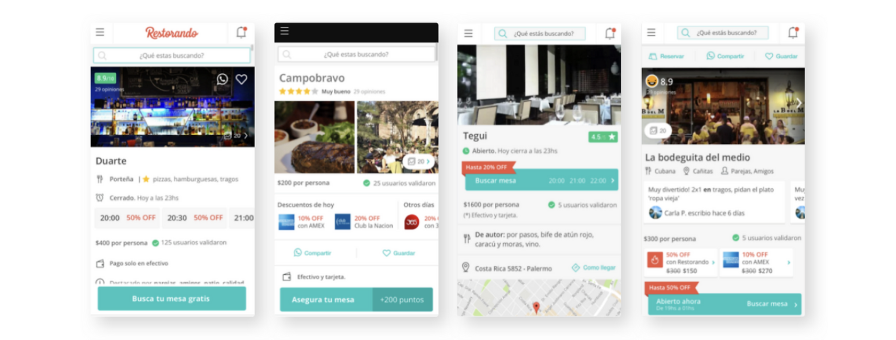
Prior to the prototype testing, each session began with an interview about the problem domain — how users currently choose restaurants, what frustrates them, what information they rely on. This gave us context to interpret behavior during the test and allowed us to adapt tasks to each user's real-life situation, making their actions more natural and their responses more reliable.
Selected findings from the sessions:
- The new information hierarchy worked — users found basic information quickly and found the more spaced layout easier to read.
- Food type needed to be specific. A word list wasn't enough; users wanted the full menu to make a decision.
- Opening hours were examined carefully. Users wanted to know whether they could eat comfortably or whether the kitchen was about to close.
- Price clarity mattered, but context did too — users were uncertain whether displayed prices included discounts.
- Photos were highly informative: users read them for food type, space, and ambiance. Low-quality or uninformative photos actively blocked decision-making.
- Star ratings weren't granular enough for comparison. Numeric scores and review volume gave users a more reliable signal — especially when scores were based on very few reviews.
- Users read at least 5 recent reviews. They looked for patterns: multiple complaints about the same issue were disqualifying; a single outlier wasn't.
- Waiting time was a relevant factor — but context-dependent. Groups of friends tolerated it; couples and families with children didn't. This insight pointed toward a future opportunity for the product.
Iterate and Define
After synthesizing the usability findings, we iterated the designs to address the identified friction points. We scoped the implementation to a version that could ship quickly, then applied the improvements to both the restaurant profile and the results page to maintain consistency across the user journey. Launching on both surfaces allowed us to measure the impact of the changes with real usage data rather than just prototype testing.
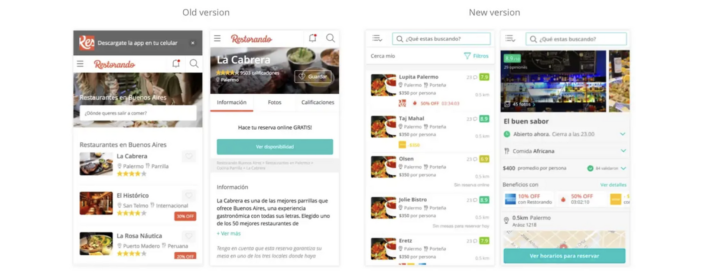
Impact
We validated the redesign with an A/B test against the previous version, measuring session time and conversion. Session time increased and bounce rate decreased — confirming that users were engaging with the new profile rather than leaving immediately.
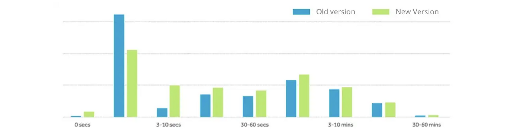
The most significant result: users who saw the new version converted 24% more than those on the old version. The improvement came not from optimizing the booking prompt, but from giving users the information they actually needed to make a decision. When the experience serves the real job to be done, conversion follows.